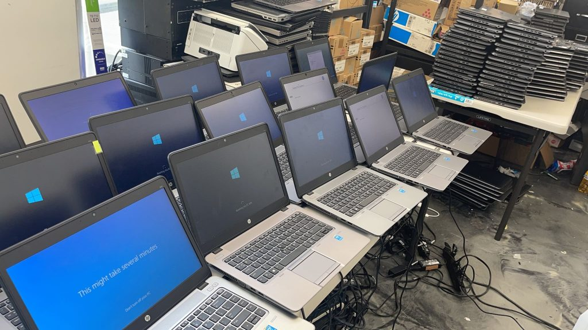
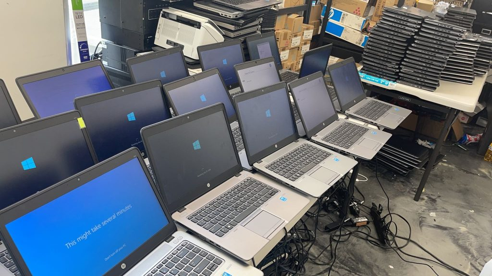

Sobre BLST
BLST nació con la misión de cuidar el medio ambiente a través del reciclaje de dispositivos electrónicos. Desde nuestros inicios en 2015, hemos gestionado más de 50 toneladas de residuos tecnológicos.
Estamos comprometidos con la sostenibilidad, fomentando la economía circular y ofreciendo servicios responsables a empresas y particulares. Cada equipo que procesamos se transforma en nuevas oportunidades, reduciendo la contaminación y el desperdicio.
Nuestro Equipo
Contamos con técnicos especializados, ingenieros ambientales y un equipo logístico que garantiza un reciclaje seguro y eficiente. Trabajamos día a día para innovar en procesos ecológicos y mantener la confianza de nuestros clientes.
 
